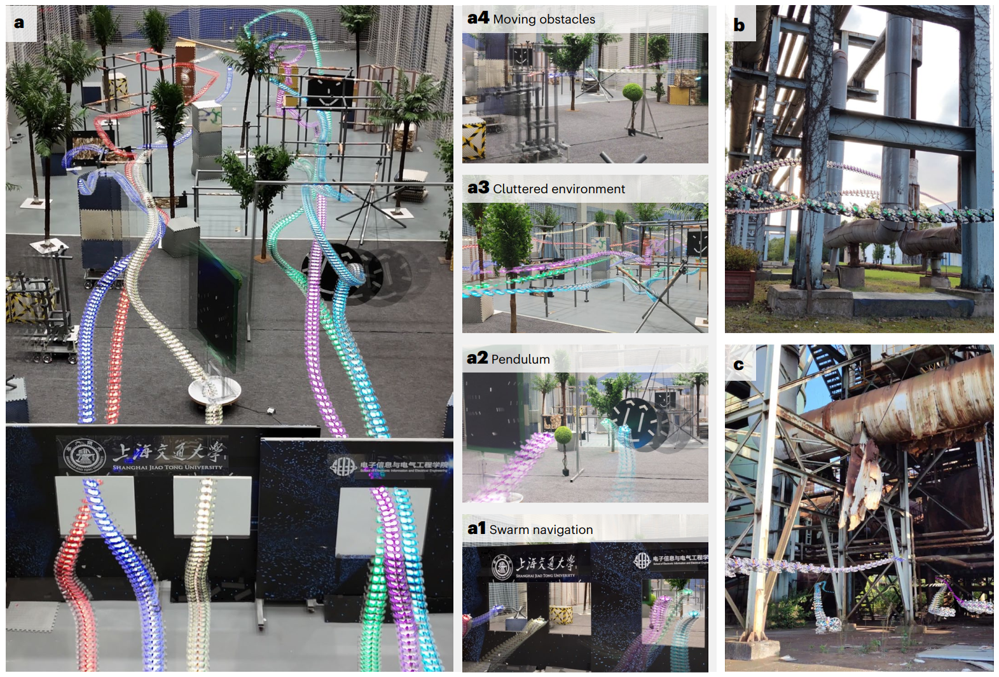
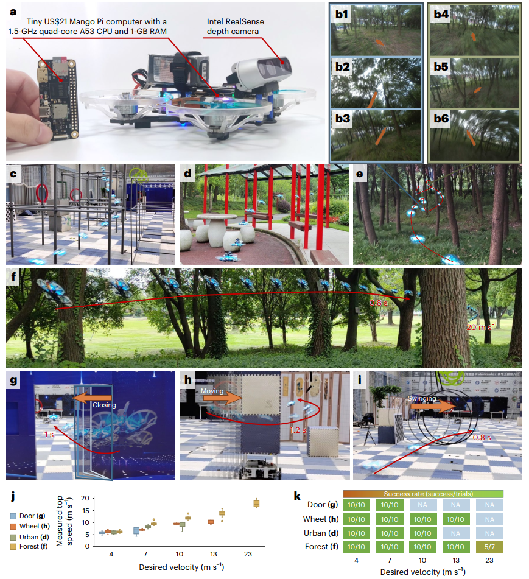
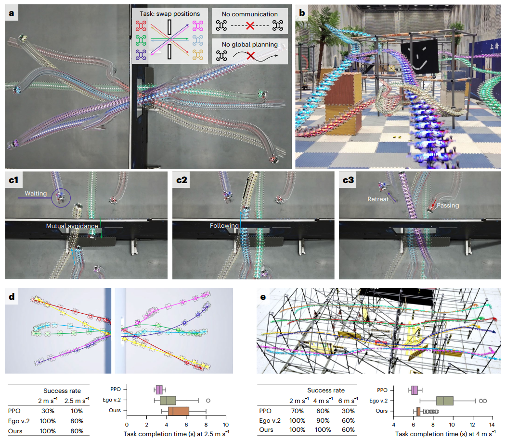
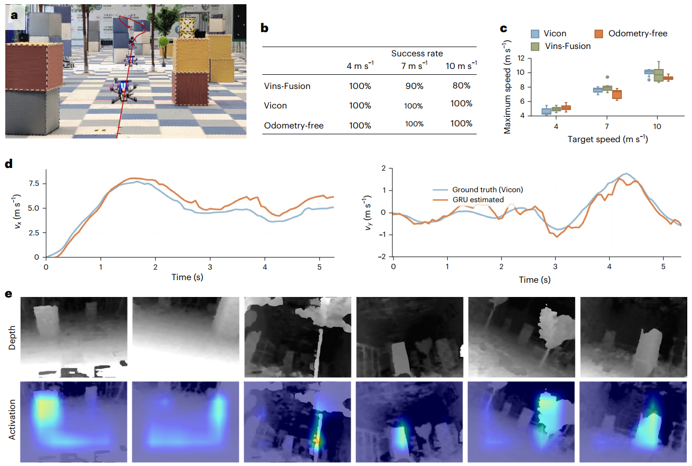
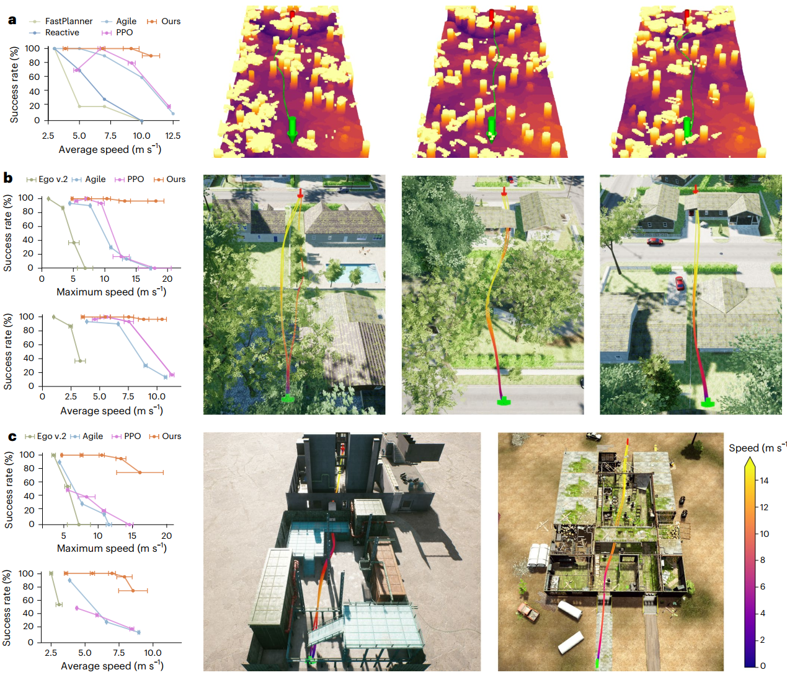

| Title | Learning Vision-Based Agile Flight via Differentiable Physics（基于可微分物理的视觉敏捷飞行学习） |
| Authors | Yuang Zhang1,3、Yu Hu1,3、Yunlong Song2,3（共同一作），Danping Zou1（corresponding），Weiyao Lin1（corresponding） |
| Affiliation | 1. 上海交通大学（Shanghai Jiao Tong University）；2. 苏黎世大学（University of Zurich） |
| Venue | Nature Machine Intelligence，2025年6月，Vol. 7，pp. 954–966 |
| DOI / Links | 10.1038/s42256-025-01048-0 | Received: 2024-07-15 | Accepted: 2025-05-01 | Published: 2025-06-16 |
| TL;DR | 提出一种端到端可微分物理仿真训练框架，通过将损失梯度直接反向传播穿过点质量物理模型来优化神经网络控制策略，实现视觉敏捷飞行。在真实森林环境中达到 20 m/s（超越此前模仿学习方法 2 倍），成功率 90%。无需通信的多智能体集群展现出等待、跟随、退让等涌现自组织行为。所有计算仅需一块 US$21 的 ARM 单板计算机（Mango Pi），成本不到现有 GPU 方案的 5%。 |
| Inspiration Source | What Insight It Inspired | Type |
|---|---|---|
| 可微分编程在机器人学中的兴起（DiffTaichi、GradSim 等） | 将可微分物理的思想从四足 locomotion / 系统辨识迁移到视觉无人机导航——此前这个领域从未使用过可微分仿真进行真实世界飞行。关键是发现：简单的点质量模型足够产生可迁移的策略，不需要刚体全动力学 | 架构 |
| Metz et al. (2021) "Gradients are not all you need"——长时间反向传播的梯度爆炸问题 | 引入时间梯度衰减（exponential gradient decay $e^{-\tau t}$）：在 BPTT 过程中对梯度乘以指数衰减因子，使得监督信号主要来自近期未来，消除远期不确定障碍的干扰。这解决了可微分仿真最棘手的数值问题 | 方法 |
| GRU 门控循环单元（Cho et al. 2014）——序列建模中的隐状态维护 | 使用 GRU 维护时序隐状态，使得网络仅依赖单帧深度图即可隐式提取运动线索（motion cues）——无需堆叠多帧输入，推理速度更快、更适合资源受限硬件 | 策略 |
| Softplus 障碍函数（Dugas et al. 2000）——二阶平滑约束 | 将障碍物避碰构造为连续可微的 softplus 势垒函数——接近速度 $v_c^k$ 作为调节因子，远离障碍物时 loss=0，靠近时平滑增大。这是将传统控制理论中的障碍函数引入可微分学习的经典迁移 | 数学 |
flowchart TB
subgraph PERCEPTION["感知层 (Intel RealSense D435i)"]
direction LR
DEPTH["深度相机 · 15Hz · 16×12 池化"]
STATE["状态信息: 目标方向 · 速度估计 · 姿态"]
end
subgraph POLICY["策略网络 (卷积GRU)"]
direction LR
CNN["CNN编码器: Conv32→64→128 · LeakyReLU"]
PROJ["线性投影: 状态→192维 · 融合(逐元素加法)"]
GRU["GRU单元 · 隐状态维护 · 时序运动线索提取"]
ACTOR["全连接层: 输出期望加速度 + 速度估计"]
end
subgraph PHYSICS["可微分物理仿真 (训练阶段)"]
direction LR
PMODEL["点质量模型: v_{k+1}=v_k+(a_k+a_{k+1})Δt/2"]
DRAG["二次空气阻力 · p_{k+1}=p_k+v_kΔt+0.5a_kΔt²"]
FILTER["控制延迟τ+指数平滑α: 卷积响应建模"]
RENDER["深度渲染: 姿态外参 → 简单几何体场景"]
end
subgraph CONTROL["飞行控制层 (真实部署)"]
direction LR
ACCEL["加速度指令 → 期望姿态+总推力"]
FC["BetaFlight飞控 · 高频内环跟踪"]
MOTOR["1606 3750KV电机 · 3寸桨 · 推重比3.8"]
end
subgraph HARDWARE["硬件平台 (365g · US$21计算机)"]
direction LR
MANGO["Mango Pi · A53四核1.5GHz · 1GB RAM"]
TOWER["Aocoda F7mini飞控 · HAKRC四合一电调"]
FRAME["Roma 3寸机架 · 30×65×6mm³"]
end
DEPTH --> CNN
STATE --> PROJ
CNN --> ACTOR
PROJ --> ACTOR
GRU --> ACTOR
ACTOR -->|"训练: 梯度回传"| PMODEL
PMODEL --> DRAG
DRAG --> RENDER
RENDER -.->|"下一帧渲染"| DEPTH
ACTOR -->|"部署: 加速度指令"| ACCEL
ACCEL --> FC
FC --> MOTOR
MOTOR --> FRAME
RENDER -.->|"loss: 速度匹配+避碰+平滑"| ACTOR
FC -.->|"状态反馈"| STATE
classDef percept fill:#fef7ed,stroke:#f59e0b,stroke-width:2px,color:#92400e
classDef policy fill:#e8f0fe,stroke:#3b82f6,stroke-width:2px,color:#1d4ed8
classDef physics fill:#f0ebfd,stroke:#8b5cf6,stroke-width:2px,color:#6d28d9
classDef control fill:#e6f7ee,stroke:#10b981,stroke-width:2px,color:#047857
classDef hw fill:#dbeafe,stroke:#2563eb,stroke-width:2px,color:#1e40af
class DEPTH,STATE percept
class CNN,PROJ,GRU,ACTOR policy
class PMODEL,DRAG,FILTER,RENDER physics
class ACCEL,FC,MOTOR control
class MANGO,TOWER,FRAME hw
flowchart TB
subgraph INPUT["输入数据"]
direction LR
DEPTH_IN["深度图 16×12 · 单帧输入"]
VEL_IN["速度估计 v_k · 目标方向"]
ATT_IN["姿态估计 · 偏航对齐目标"]
end
subgraph FORWARD["前向传播"]
direction LR
CNN_FWD["CNN特征提取: 2层卷积→192维"]
STATE_FWD["状态编码: 线性投影→192维"]
FUSION["特征融合: 逐元素加法"]
GRU_FWD["GRU隐状态更新: h_k → h_{k+1}"]
OUTPUT["输出: 期望加速度 u_k + 隐式速度估计"]
end
subgraph SIM["可微分仿真 (前向+反向)"]
direction LR
THRUST_FILT["推力滤波: 延迟τ + 指数平滑α"]
DRAG_CALC["空气阻力: 二次阻力模型"]
ACC_CALC["加速度: a_k = (u_k_filtered + drag)/m"]
INTEGRATE["数值积分: v_{k+1}, p_{k+1}"]
LOSS_CALC["Loss: L=λ_v·L_v + λ_c·L_c + λ_a·L_a + λ_j·L_j"]
end
subgraph BACKWARD["反向传播 (时间梯度衰减)"]
direction LR
LOSS_GRAD["∂L/∂x_K → 从终端反向"]
DECAY["时间衰减: ∂x_j/∂x_{j-1} × e^{-τ·Δt}"]
PARAM_GRAD["策略参数梯度: ∂L/∂θ ← 链式法则"]
UPDATE["梯度下降: θ ← θ - η·∂L/∂θ"]
end
subgraph DEPLOY["真实部署 (推理仅前向)"]
direction LR
INFER["推理: CNN+GRU → 加速度 · ~15Hz"]
FC_CMD["飞控指令: 加速度→姿态+推力"]
REAL_FLY["真实飞行: 森林/城市/工厂 · 最速20m/s"]
end
INPUT --> FORWARD
FORWARD --> SIM
SIM --> BACKWARD
BACKWARD -.->|"参数更新"| FORWARD
FORWARD --> DEPLOY
LOSS_CALC -.->|"L_v: 速度匹配 · L_c: softplus避碰"| LOSS_GRAD
PARAM_GRAD -.->|"一阶梯度 · 方差 < 零阶"| UPDATE
DECAY -.->|"缓解梯度爆炸 · 强调近期监督"| PARAM_GRAD
classDef inputC fill:#fef7ed,stroke:#f59e0b,stroke-width:2px,color:#92400e
classDef forwardC fill:#e8f0fe,stroke:#3b82f6,stroke-width:2px,color:#1d4ed8
classDef simC fill:#f0ebfd,stroke:#8b5cf6,stroke-width:2px,color:#6d28d9
classDef backC fill:#ffe4e6,stroke:#f43f5e,stroke-width:2px,color:#be123c
classDef deployC fill:#e6f7ee,stroke:#10b981,stroke-width:2px,color:#047857
class DEPTH_IN,VEL_IN,ATT_IN inputC
class CNN_FWD,STATE_FWD,FUSION,GRU_FWD,OUTPUT forwardC
class THRUST_FILT,DRAG_CALC,ACC_CALC,INTEGRATE,LOSS_CALC simC
class LOSS_GRAD,DECAY,PARAM_GRAD,UPDATE backC
class INFER,FC_CMD,REAL_FLY deployC
flowchart TD
subgraph TRAIN["阶段1: 可微分仿真训练"]
direction LR
T1["环境构建: 简单几何体 · 随机摆放 · 64并行"] --> T2["前向仿真: 150步/dt=1/15s · 点质量+阻力+延迟"] --> T3["Loss计算: 速度匹配+softplus避碰+平滑"] --> T4["反向传播: BPTT+时间梯度衰减e^{-τt} · 更新θ"]
end
subgraph VAL["阶段2: 仿真验证与消融"]
direction LR
V1["单智能体测试: 森林/城市/工厂 · 4~22m/s"] --> V2["多智能体测试: 6~8机 · 窄门换位+并行飞行"] --> V3["消融: 梯度衰减τ · GRU vs MLP/LSTM · 点质量vs刚体"] --> V4["基线对比: Ego v.2 · Agile · PPO · Deep-ILC"]
end
subgraph DEPLOY_REAL["阶段3: 真实世界部署"]
direction LR
R1["硬件集成: Mango Pi+Realsense+F7mini · 365g"] --> R2["零样本迁移: 策略直接部署 · 无微调"] --> R3["高速度测试: 7~20m/s · 稠密森林 · 动态障碍 · 关门/摆锤"] --> R4["集群实验: 6机窄门换位 · 无通信 · 涌现自组织"]
end
subgraph EXTEND["阶段4: 扩展验证与未来"]
direction LR
E1["无里程计飞行: 仅依赖深度+姿态 · 匹配Vicon性能"] --> E2["Grad-CAM可视化: 障碍物区域激活验证"] --> E3["速度预测: GRU隐式估计 · 平均误差0.78m/s"] --> E4["未来: 大FOV · 刚体模型特技 · 在线阻力标定"]
end
TRAIN -->|"收敛策略"| VAL
VAL -->|"最优策略"| DEPLOY_REAL
DEPLOY_REAL -->|"验证成功 · NMI 2025"| EXTEND
T4 -.->|"反馈: 调整损失权重 v,c,a,j"| T3
V4 -.->|"反馈: 对比结果·成功率高+速度快"| T2
R3 -.->|"反馈: 漂移导致失败"| E1
R4 -.->|"反馈: FOV外碰撞"| E4
classDef trainC fill:#fef7ed,stroke:#f59e0b,stroke-width:2px,color:#92400e
classDef valC fill:#e8f0fe,stroke:#3b82f6,stroke-width:2px,color:#1d4ed8
classDef deployC fill:#f0ebfd,stroke:#8b5cf6,stroke-width:2px,color:#6d28d9
classDef extC fill:#e6f7ee,stroke:#10b981,stroke-width:2px,color:#047857
class T1,T2,T3,T4 trainC
class V1,V2,V3,V4 valC
class R1,R2,R3,R4 deployC
class E1,E2,E3,E4 extC
| 类别 | 内容 | 维度 |
|---|---|---|
| 输入 | RealSense D435i 深度图（16×12 池化）+ 目标方向 + 速度估计（可选）+ 姿态估计 | 深度 16×12 + 状态向量 ~6 维 |
| 输出 | 期望加速度向量（3 维：推力大小 + 方向），由飞控转换为姿态 + 总推力 | 加速度 ∈ R³ |
| 目标 | 在未知复杂环境中以指定速度无碰撞抵达目标位置——单智能体 90% 成功率，多智能体涌现自组织协同 | 最速 20 m/s（森林），成功率 >90%（>10 m/s） |
这是一个端到端视觉运动控制学习问题——不是传统的"感知→规划→控制"级联架构，而是从深度图直接输出飞行动作指令的单一神经网络策略。训练在可微分物理仿真中进行（策略参数通过仿真器反向传播更新），部署在US$21 ARM 计算机上实时推理。场景涵盖静态稠密障碍物（森林、城市公园、工厂）和动态障碍物（关门、平移障碍、摆锤），任务包括单智能体高速穿越和多智能体无通信集群导航。
表头用英文，正文用中文
| Prior Method | Core Idea | Why It Fails |
|---|---|---|
| Mapping-Based Navigation（基于建图的导航：FastPlanner, Ego-Planner, Ego v.2） | 先用视觉/激光构建占据栅格地图或 ESDF，然后用搜索/梯度优化规划轨迹，最后用模型预测控制（MPC）跟踪 | 级联架构的天然缺陷：每一步引入延迟和误差。高速飞行时：（a）视觉里程计漂移（特征追踪失败）→ 地图错位；（b）建图计算量巨大（Ego v.2 定位 CPU 使用率超其他进程之和）→ 延迟增加；（c）误差累积 → 规划失效。实测中 Ego v.2 仅能在 3 m/s 以下稳定运行。 |
| Imitation Learning（模仿学习：Agile, Deep Drone Acrobatics） | 训练策略模仿专家示范（由模型预测控制器或人类飞手生成的轨迹） | 专家依赖 + 泛化差：在稠密障碍物 + 高速条件下，基于采样的专家难以持续找到最优路径 → 训练的智能体飞行不稳定。最关键的是——集群专家策略极难设计（需要协调多个智能体），因此模仿学习几乎无法用于集群场景。Agile 在未见环境下降明显。 |
| Reinforcement Learning（强化学习：PPO, Deep-ILC） | 在环境中试错采样，用零阶梯度（策略梯度定理）优化策略 | 采样效率极低：零阶梯度高方差、收敛慢。本文方法仅需 PPO 10% 的采样量即可达到更高奖励。多智能体场景下采样量指数增长——PPO 在 6 机换位任务中成功率仅 10~30%，且未观察到任何自组织行为（等待/跟随/退让）。 |
| CNN Direct Regression（端到端 CNN 直接映射：CAD2RL, Giusti et al.） | 用简单 CNN 直接将图像映射为控制指令，无显式规划 | 缺少时序信息：单帧图像无法感知动态障碍物的运动趋势。速度慢（通常 <5 m/s）、泛化弱（仅适用于特定场景如森林小径）。缺乏可微分物理先验，训练依赖大量真实数据或 RL 采样。 |
本文的核心是可微分仿真驱动的端到端学习框架，而非"算法"的传统意义。训练分四个关键步骤：(1) 在 CUDA PyTorch 扩展中实现点质量可微分物理仿真；(2) 前向仿真收集 64 条并行轨迹（150 步/条）；(3) 计算物理驱动的损失函数（速度匹配 + softplus 避碰 + 平滑）；(4) 沿仿真时间轴反向传播策略梯度（使用时间梯度衰减），更新策略参数。以下逐一拆解关键公式。
LaTeX rendered by MathJax. 显示公式用 $$...$$，行内公式用 $...$。符号解释请用中文。
| 参数 | 取值 | 含义 | 为什么取这个值 |
|---|---|---|---|
| 时间步长 $\Delta t$ | 1/15 s | 仿真步长（与深度相机帧率匹配） | 与 RealSense D435i 的 15 Hz 帧率一致，避免仿真与真实间的时间不匹配 |
| 轨迹长度 T | 150 steps = 10 s | 每条训练轨迹的时间跨度 | 足够涵盖从起点到终点的完整飞行过程（10 秒 x 20 m/s = 200 m 范围） |
| 并行环境数 | 64 | 每批训练的并行仿真环境数 | 平衡 GPU 内存与训练吞吐量。64 条并行轨迹提供足够的多样性 |
| 衰减率 $\tau$ | 0.25~4 均可 | 时间梯度衰减系数 | 消融研究（Fig. 6c）表明 $\tau$ 在 0.25~4 范围均可大幅优于 vanilla BPTT，说明该方法对超参数不敏感 |
| 深度图分辨率 | 16x12（池化后） | 深度图输入尺寸 | 原始分辨率太大（CPU 无法实时处理），16x12 极低分辨率是低算力推理的必要妥协——但论文证明它足够提取避障所需的结构信息 |
| 空气阻力参数 | 平台标定 | 二次阻力模型系数 | 通过真实平台飞行数据标定——这是实现零样本 sim-to-real 的关键细节 |
| 控制延迟 $\tau$ | 以平台标定为准 | 飞控内环响应的固定延迟 | 在仿真中显式建模控制延迟是实现 sim-to-real 的关键——否则策略会学到"理想响应"而非真实响应 |
| 对比维度 | 可微分物理（本文） | 强化学习（PPO） | 模仿学习（Agile） |
|---|---|---|---|
| 动力学处理 | 白箱——解析雅可比，梯度直接回传 | 黑箱——依赖采样估计梯度 | 黑箱——不显式建模动力学 |
| 梯度阶数 | 一阶（低方差） | 零阶（高方差） | 监督学习梯度（无动力学） |
| 样本效率 | 最高（10% RL 样本量） | 低（需要海量仿真数据） | 高（但依赖专家数据） |
| 多智能体 | 天然支持——涌现自组织 | 采样指数增长，成功率低 | 几乎不可用（缺集群专家） |
| 关键挑战 | 梯度爆炸 → 时间衰减解决 | 方差 + 效率 → 根本瓶颈 | 专家依赖 → 泛化瓶颈 |
理解本论文需要掌握三个关键基础原理：可微分物理仿真（为什么梯度可以直接穿过物理模型）、时间梯度衰减（如何让可微分优化在长时间序列上稳定）、点质量 vs 刚体建模的优化景观差异（为什么简单模型反而更好）。
为什么这个"简单"的点质量模型是可微分物理的关键优势：点质量模型的雅可比矩阵具有极简形式——$\partial p_{k+1}/\partial v_k = \Delta t \cdot I$（恒等缩放），$\partial v_{k+1}/\partial a_k = \Delta t/2 \cdot I$——这意味着梯度信号流畅地在时间轴上传播，不会像刚体模型那样因旋转矩阵、欧拉角奇点等非线性导致梯度消失或突变。这提供了更平滑的优化景观（optimization landscape），使得一阶梯度下降更高效。
步骤 1：随机生成简单几何体场景（平面、长方体、球体、圆柱体），64 个环境并行。
步骤 2：策略网络接收深度图 + 状态 → 输出期望加速度 $u_k$。
步骤 3：$u_k$ 经过控制延迟 + 指数平滑 → 滤波推力。加上空气阻力 → 总加速度。数值积分 → $v_{k+1}$, $p_{k+1}$。
步骤 4：计算损失 $\mathcal{L} = \lambda_v \mathcal{L}_v + \lambda_c \mathcal{L}_c + \lambda_a \mathcal{L}_a + \lambda_j \mathcal{L}_j$。
步骤 5：$\partial \mathcal{L}/\partial \theta$ 通过时间梯度衰减 BPTT 直接反传。
步骤 1：相同仿真环境（但不可微分）。
步骤 2：策略采样动作，环境返回下一状态和奖励。
步骤 3：收集 rollouts，用广义优势估计（GAE）估计 advantage。
步骤 4：用策略梯度定理（零阶）$\approx \mathbb{E}[\nabla \log \pi \cdot A]$ 更新策略。
步骤 5：重复，需要 10x 采样量才能达到可微分物理的性能。
为什么 vanilla BPTT 会爆炸：在 150 步的仿真轨迹上反向传播时，每一步的雅可比矩阵 $\partial x_{j}/\partial x_{j-1}$ 可能包含大于 1 的特征值。150 次连乘后，梯度可能达到天文数字。更隐蔽的问题是：即使雅可比特征值略小于 1（梯度不会爆炸成 NaN），但远期障碍物的梯度贡献远大于近期——因为梯度从终端累积到早期时间步——导致优化方向由不确定性最高的远期障碍物主导，而非确定性最高的近期障碍物。
论文原图截图。图片保存至 figures/ 子目录。命名 fig1.png ~ fig5.png 即可自动显示。

请将截图保存为figures/fig1.png本图展示了：在多种具有挑战性的真实环境中（室内静态+动态障碍物、工业金属框架、废弃工厂），多旋翼无人机仅依赖US$21 Mango Pi 计算机 + 深度相机实现高速敏捷集群飞行。所有结果均使用机载视觉传感器，无人机之间无任何通信。

请将截图保存为figures/fig2.png本图展示了：从硬件平台到飞行性能的完整实证链条。由 11 个子图组成（a-k），涵盖平台设计、环境多样性、动态避障、速度统计和成功率。

请将截图保存为figures/fig3.png本图展示了：论文最具亮点的多智能体实验——6 架无人机同时从两侧穿越同一窄门交换位置，无通信、无全局规划、无集中协调，展现出涌现的自组织行为。

请将截图保存为figures/fig4.png本图展示了：一个极具说服力的实验——策略网络完全移除速度输入后，仅依赖深度图+姿态估计，性能匹配使用 Vicon 真值速度的智能体（100% 成功，相同速度）。这说明 GRU 隐状态隐式地估计了自身运动状态。

请将截图保存为figures/fig5.png本图展示了：在三种仿真环境（森林、城市、工厂）中与多个前沿方法的综合对比，包括基于建图的（Ego v.2、FastPlanner、Reactive）、基于模仿学习的（Agile）和基于强化学习的（PPO）。
| 数据问题 | 潜在困难 | 严重程度 |
|---|---|---|
| 深度相机失效场景（强光直射、透明/镜面物体、远距离） | RealSense D435i 在室外强光下深度质量下降（红外干涉），且无法探测透明玻璃和镜面。这会导致避碰策略的输入质量骤降——论文未讨论此边界条件 | ★★★★★ |
| 空气阻力标定的平台依赖性 | 跨平台迁移需要重新飞行测试并标定阻力参数——这是一个手工步骤，阻碍了即插即用部署。如果标定不准，sim-to-real 策略性能会显著下降 | ★★★★ |
| 低速/悬停场景的策略表现 | 训练目标（损失函数）强调速度匹配和避碰——并未包含悬停稳定性目标。在需要悬停等待时（如换位任务中的"等待"行为），策略能否保持稳定尚不明确 | ★★★ |
| 随机种子敏感性 | 消融实验使用 5 个随机种子（Fig. 6c-e），训练曲线有明显方差。虽然趋势一致，但最终性能对种子有一定敏感性 | ★★ |
| 参考文献 | 为什么重要 |
|---|---|
| Loquercio et al. (2021) — Learning high-speed flight in the wild. Science Robotics 6, 5810 | Agile——此前视觉高速飞行领域最具代表性的模仿学习方法。本文在森林环境中的 20 m/s 速度是 Agile 的 2 倍。更重要的是 Agile 需要专家示范 + DAgger 纠错，而本文完全不需要专家。对比阅读可以理解模仿学习和可微分物理之间的范式差异。 |
| Zhou et al. (2022) — Swarm of micro flying robots in the wild. Science Robotics 7, 5954 | Ego v.2——此前最先进的集群无人机系统。本文的集群对比实验（Fig. 3）直接与 Ego v.2 对标。关键差异：Ego v.2 需要 UWB 通信 + 全局定位 + 中心化规划，本文仅需局部感知 + 无通信。 |
| Metz et al. (2021) — Gradients are not all you need. arXiv:2111.05803 | 首次系统性地指出可微分仿真中 BPTT 导致的梯度爆炸问题——本文的"时间梯度衰减"直接针对此问题。理解这篇是理解本文方法动机的关键前置知识。 |
| Song et al. (2024) — Learning quadruped locomotion using differentiable simulation. CoRL 2024 | 将可微分物理用于四足 locomotion 的代表性工作。与本文的关联：方法论同源（都是用可微分物理训练神经网络策略），但迁移到了完全不同的领域（四足行走 vs 无人机视觉飞行）。对比阅读可以理解可微分物理的跨领域适用性。 |